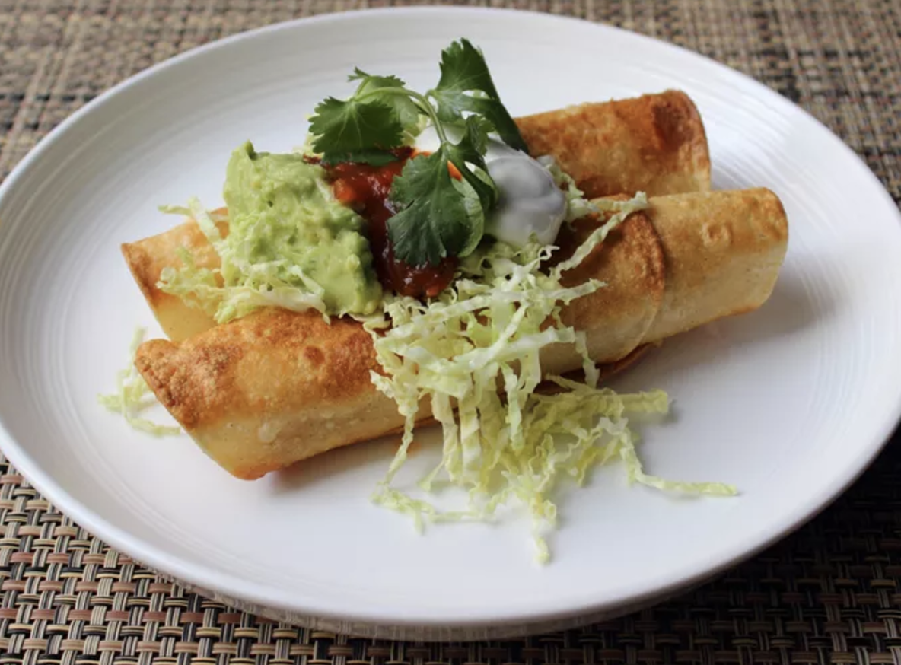

Crispy-Turkey-Flautas

Description
Crispy Turkey Flautas are the perfect way to elevate leftover turkey into a flavorful, crispy delight. Filled with shredded turkey, pepper Jack cheese, and green onions, these flautas are rolled tightly in warm tortillas and pan-fried to golden perfection. Topped with a vibrant combination of shredded napa cabbage, guacamole, sour cream, salsa, and fresh cilantro, they offer a delightful balance of savory, creamy, and crunchy textures. Whether served as an appetizer or a main course, these flautas bring bold Mexican-inspired flavors to your table in under 30 minutes. A true crowd-pleaser for any occasion!
Ingredients
- 1 pound cooked, shredded turkey
- 6 ounces shredded pepper Jack cheese
- ⅓ cup chopped green onions
- Salt and freshly ground black pepper, to taste
- 24 small white corn tortillas
- 1 egg white, to seal flautas (optional)
- ¾ cup shredded napa cabbage
- ¾ cup guacamole
- ¾ cup sour cream
- ¾ cup salsa
- ¼ cup chopped fresh cilantro
- Vegetable oil, for frying
Steps To Prepare
- Mix shredded turkey, pepper Jack cheese, green onions, salt, and pepper together in a bowl.
- Wrap a stack of tortillas in a paper towel and place them in a sealable plastic bag. Microwave on high for about 45 seconds until the tortillas are hot and flexible. Keep tortillas warm in the bag as you fill them.
- Place 2 tortillas on a work surface, overlapping slightly to create a longer tortilla. Spoon about 1/4 to 1/3 cup of the turkey mixture onto the tortillas below the centerline.
- Paint a bit of egg white along the top edge of the tortillas to seal. Roll the tortillas tightly from the bottom edge over the filling and set them aside seam-side down while filling the remaining tortillas.
- Heat 1/4 inch of vegetable oil in a sauté pan over medium heat. Once hot, place the flautas seam-side down in the oil and press gently with a spatula to flatten.
- Fry in batches for 3 to 4 minutes per side, until crispy, golden, and heated through. Drain on paper towels for about a minute.
- Serve flautas topped with shredded napa cabbage, guacamole, sour cream, salsa, and chopped cilantro.